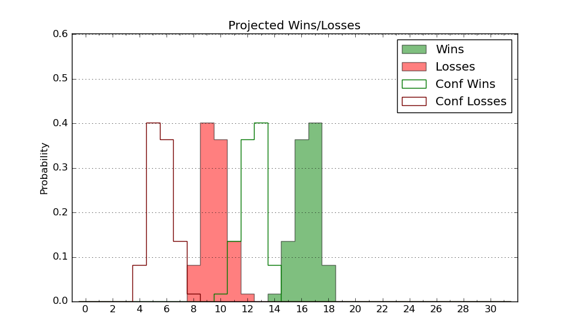

| Home | Game Probabilities | Conferences | Preseason Predictions | Odds Charts | NCAA Tournament |
| City: | Nacogdoches, Texas | |
| Conference: | Western (4th)
| |
| Record: | 10-4 (Conf) 14-8 (Overall) | |
| Ratings: | Comp.: 4.3 (124th) Net: 4.3 (123rd) Off: 100.6 (214th) Def: 96.3 (66th) SoR: 1.5 (116th) |
| Remaining | ||||||
|---|---|---|---|---|---|---|
| Date | Opponent | Win Prob | Pred. | |||
| 2/24 | Sam Houston St. (167) | 74.4% | W 69-61 | |||
| 2/26 | Abilene Christian (145) | 70.5% | W 73-67 | |||
| 3/2 | @ New Mexico St. (85) | 22.3% | L 64-73 | |||
| 3/5 | @ UT Rio Grande Valley (295) | 72.7% | W 79-72 | |||
| Previous | Game Score | |||||
| Date | Opponent | Win Prob | Result | Off | Def | Net |
| 11/14 | South Dakota St. (88) | 50.6% | L 71-83 | -11.0 | -5.7 | -16.7 |
| 11/19 | Middle Tennessee (112) | 60.0% | W 87-74 | 14.3 | 1.5 | 15.8 |
| 11/23 | (N) Buffalo (107) | 43.3% | W 79-78 | 5.2 | -1.1 | 4.1 |
| 11/24 | (N) Saint Louis (58) | 28.2% | L 68-79 | 1.4 | -6.6 | -5.2 |
| 11/28 | @Northwestern St. (318) | 79.3% | W 72-68 | -7.2 | -4.3 | -11.5 |
| 12/11 | (N) Liberty (114) | 45.5% | W 63-51 | -0.9 | 17.8 | 16.8 |
| 12/14 | Louisiana Monroe (283) | 89.0% | L 69-82 | -8.0 | -32.1 | -40.2 |
| 12/18 | @Kansas (5) | 4.2% | L 72-80 | 12.2 | 8.6 | 20.8 |
| 1/6 | @Abilene Christian (145) | 41.2% | W 64-58 | -3.8 | 20.1 | 16.3 |
| 1/8 | @Tarleton St. (202) | 52.2% | L 71-77 | -2.7 | -8.0 | -10.7 |
| 1/11 | UT Rio Grande Valley (295) | 90.1% | W 86-75 | 0.3 | -14.1 | -13.8 |
| 1/15 | @Sam Houston St. (167) | 46.0% | L 41-49 | -29.4 | 18.4 | -11.0 |
| 1/17 | Lamar (342) | 95.7% | W 86-78 | 9.5 | -29.5 | -20.0 |
| 1/20 | Grand Canyon (108) | 58.7% | W 71-46 | 6.3 | 25.4 | 31.7 |
| 1/22 | New Mexico St. (85) | 49.4% | L 58-72 | -9.1 | -11.8 | -20.9 |
| 1/26 | @Seattle (127) | 35.7% | L 62-70 | 0.8 | -9.2 | -8.4 |
| 1/29 | @California Baptist (219) | 55.5% | W 81-77 | 10.9 | -13.1 | -2.2 |
| 2/3 | Utah Valley (115) | 61.9% | W 78-59 | 8.2 | 12.7 | 20.8 |
| 2/5 | Dixie St. (277) | 88.6% | W 81-52 | -2.5 | 18.2 | 15.7 |
| 2/10 | @Chicago St. (345) | 86.9% | W 81-61 | 0.9 | 7.7 | 8.6 |
| 2/16 | Chicago St. (345) | 95.7% | W 88-71 | 4.0 | -7.8 | -3.8 |
| 2/19 | @Lamar (342) | 86.7% | W 70-56 | -9.0 | 12.6 | 3.6 |
| Stats & Trends | |||||
|---|---|---|---|---|---|
| Current | Day | Week | Month | Season | |
| Composite | 4.3 | -0.1 | +0.3 | +2.5 | +0.3 |
| Comp Rank | 124 | -2 | +4 | +22 | +37 |
| Net Efficiency | 4.3 | -0.1 | +0.3 | +2.8 | -- |
| Net Rank | 123 | -1 | +5 | +20 | -- |
| Off Efficiency | 100.6 | +0.0 | -0.4 | +1.3 | -- |
| Off Rank | 214 | +1 | -9 | +8 | -- |
| Def Efficiency | 96.3 | -0.1 | +0.7 | +1.6 | -- |
| Def Rank | 66 | -1 | +8 | +34 | -- |
| SoS Rank | 205 | -3 | -12 | -53 | -- |
| Exp. Wins | 16.4 | +0.0 | +0.1 | +1.4 | -0.8 |
| Exp. Conf Wins | 12.4 | +0.0 | +0.1 | +1.4 | +0.8 |
| Conf Champ Prob | 2.1 | -0.1 | -1.9 | -0.2 | -17.9 |

| Advanced Stats | ||
|---|---|---|
| Stat | Value | Rank |
| Off Eff FG % | 0.501 | 177 |
| Off Ast Ratio | 0.140 | 167 |
| Off ORB% | 0.345 | 30 |
| Off TO Rate | 0.194 | 341 |
| Off FT Ratio | 0.322 | 125 |
| Def Eff FG % | 0.485 | 115 |
| Def Ast Ratio | 0.132 | 110 |
| Def ORB% | 0.306 | 266 |
| Def TO Rate | 0.215 | 12 |
| Def FT Ratio | 0.377 | 320 |